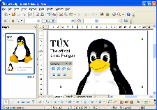

Draw
Il potente programma di grafica
 Da uno schizzo veloce a un progetto complesso, DRAW vi offre gli strumenti per comunicare con grafica e diagrammi.
{kind=link}
'Parcheggiate' gli strumenti maggiormente utilizzati intorno al vostro schermo pronti per richiamarli con un click.
Usate 'Stili' e 'Formattazione' per disporre i vostri stili grafici a portata di mano.
Manipolate oggetti, ruotateli in due o tre dimensioni; il controller 3D inserisce sfere, anelli, cubi, ecc a vostra disposizione.
Disponete gli oggetti come volete: raggruppate, dividete, riunite gli oggetti una volta raggruppati. Il sofisticato rendering vi permette di creare immagini fotorealistiche con le vostre texture, effetti di luce, trasparenze, prospettive, e così via.
I connettori intelligenti velocizzano il lavoro dei diagrammi di flusso, diagrammi organizzativi, diagrammi di rete, ecc. Impostate i vostri 'punti di attacco' per far 'attaccare' i connettori.
Le linee di dimensionamento calcolano e mostrano automaticamente le dimensioni lineari mentre disegnate.
Usate la Galleria Immagini per le clipart; create i vostri disegni e aggiungeteli alla Galleria.
Salvate i vostri documenti nel formato OpenDocument, lo standard internazionale per i documenti di ufficio. Questo formato, basato su XML, è uno standard aperto: ciò significa che non siete legati a DRAW. Potete aprire i vostri documenti con qualsiasi programma compatibile con OpenDocument.
Importate i disegni da tutti i formati comuni (incluso BMP, GIF, JPEG, PNG, TIFF e WMF).
Usate la capacità di DRAW di creare delle versioni Flash (SWF) dei vostri lavori.
Traduzione a cura dei volontari del progetto localizzazione.